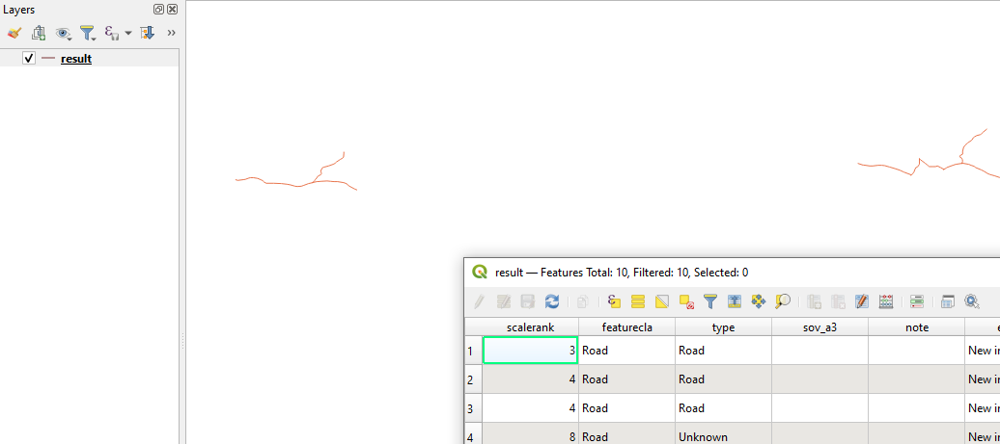

Using GeoParquet in MapServer#
There’s been a lot of buzz around GeoParquet, with posts such as GeoParquet 1.0.0 is Here, and It’s Changing the Geospatial Game and GeoParquet will be the most important tool in modern GIS in 2022.
A summary of the format from the official site is:
Apache Parquet is a powerful column-oriented data format, built from the ground up to as a modern alternative to CSV files. GeoParquet is an incubating Open Geospatial Consortium (OGC) standard that adds interoperable geospatial types (Point, Line, Polygon) to Parquet.
Can the GeoParquet format be used by MapServer? Of course! This post details how.
Does my MapServer Support GeoParquet?#
Thanks to the use of GDAL in MapServer, GeoParquet is available both as a data source, and as an output option. The GDAL GeoParquet driver was added in version 3.5 of GDAL. To check the version of GDAL used by your MapServer installation you can run the following from the command-line:
mapserv -v
MapServer version 8.0.1 PROJ version 9.1 GDAL version 3.7 OUTPUT=PNG...
INPUT=OGR INPUT=GDAL
GDAL and PROJ version numbers were added to the -v output in MapServer 8.0. GDAL is no longer an optional requirement of MapServer,
so OGR and GDAL inputs should always be available.
GDAL can be compiled with many different options, and different include different drivers. To check that your version of GDAL includes GeoParquet support run the following.
ogr2ogr --formats
..
Parquet -vector- (rw+v): (Geo)Parquet
Arrow -vector- (rw+v): (Geo)Arrow IPC File Format / Stream
GTFS -vector- (rov): General Transit Feed Specification
..
If “Parquet” isn’t listed in the output you are out of luck and will need to look at updating or rebuilding
your MapServer installation. Note the Camptocamp’s docker-mapfile
uses the GDAL base image ghcr.io/osgeo/gdal:ubuntu-small-3.7.1 which doesn’t currently include GeoParquet support.
Displaying GeoParquet#
Any format that can be read by GDAL format can also be read by MapServer thanks to OGR Support. There is an example.parquet file in the GeoParquet GitHub repository. We can display it directly without needing to download any data with the following Mapfile:
MAP
NAME "GeoParquetExample"
EXTENT -180 -90 180 90
IMAGECOLOR "#6DA9D2"
PROJECTION
"init=epsg:4326"
END
LAYER
TYPE POLYGON
NAME "countries"
STATUS ON
CONNECTIONTYPE OGR
CONNECTION "/vsicurl/https://github.com/opengeospatial/geoparquet/raw/main/examples/example.parquet"
CLASS
STYLE
COLOR "#2A8000"
END
END
END
END
You can see a fully working example in MapServer Studio at https://app.mapserverstudio.net/#vSEEMuQ6.
If you don’t have GeoParquet support you’ll likely see the message below:
msDrawMap(): Image handling error. Failed to draw layer named 'countries'.
msOGRFileOpen(): OGR error. Open failed for OGR connection in layer `countries'. File not found or unsupported format. Check server logs.
The easiest way to check if you’ll be able to display the data is to use ogrinfo. If ogrinfo can read the file, then MapServer will also be able to.
ogrinfo "/vsicurl/https://github.com/opengeospatial/geoparquet/raw/main/examples/example.parquet"
INFO: Open of `/vsicurl/https://github.com/opengeospatial/geoparquet/raw/main/examples/example.parquet'
using driver `Parquet' successful.
1: example (Multi Polygon)
Serving GeoParquet#
Not only can MapServer render GeoParquet, it can also dynamically create GeoParquet output for downloading. MapServer can serve data in any GDAL/OGR format thanks to OGR Output support.
GeoParquet datasets can be served out using the WFS protocol by adding the following to your Mapfile:
# add the GeoParquet as an output format
OUTPUTFORMAT
NAME "GEOPARQUET"
DRIVER "OGR/Parquet"
FORMATOPTION "STORAGE=memory"
FORMATOPTION "FORM=simple"
FORMATOPTION "FILENAME=result.parquet"
END
WEB
METADATA
# ensure the format is included as a WFS output option
"wfs_getfeature_formatlist" "GEOPARQUET" # must match OUTPUTFORMAT NAME
END
END
Again a fully working example is available in MapServer Studio at https://app.mapserverstudio.net/#7nvG15fQ.
To test you can get data successfully you can make a WFS request. MapServer Studio has the Open Web Services Inspector integrated into its user interface We can use this to create a WFS request for a Mapfile with GeoParquet support.
The OWS Inspector doesn’t currently support displaying binary files so you’ll need to copy and paste the generated URL into a new browser tab to trigger a file download.
The URL will look similar to below:
https://api.mapserverstudio.net/mapserver/?map=/etc/mapserver/mapfiles/output/ce2919f6-95f4-455c-ba9a-6927953ada61.map&version=2.0.0&request=GetFeature&service=WFS&typeNames=Line&outputFormat=GEOPARQUET&exceptions=xml&count=10
Once the GeoParquet file is downloaded you can test that the output is valid in a GIS application such as QGIS:
To further customise GeoParquet output any of the layer creation options listed on the
GDAL GeoParquet Driver
page can be added to the OUTPUTFORMAT block using a FORMATOPTION with a LCO: prefix, for example:
OUTPUTFORMAT
NAME "GEOPARQUET"
...
FORMATOPTION "LCO:GEOMETRY_NAME=geom" # default is geometry
FORMATOPTION "LCO:FID=ObjectId"
FORMATOPTION "LCO:CREATOR=MapServerStudio"
END
We can check that these options have been used by requesting the data again and viewing the fields using ogrinfo:
ogrinfo result.parquet result -so
Layer name: result
Geometry: Line String
Feature Count: 10
Extent: (48.386817, 46.542510) - (58.537021, 51.863015)
...
FID Column = ObjectId
Geometry Column = geom
When requesting data if the GeoParquet driver isn’t available you’ll receive an error similar to below. In this case check again that you have GeoParquet support available in your MapServer installation.
<HTML>
<HEAD><TITLE>MapServer Message</TITLE></HEAD>
<BODY BGCOLOR="#FFFFFF">
loadOutputFormat(): General error message. OUTPUTFORMAT (OGRFLATGEOBUF) clause references driver (OGR/Parquet), but this driver isn't configured.
msInitDefaultOGROutputFormat(): General error message. No OGR driver named `Parquet' available.
</BODY></HTML>
I hope you’ve found this post helpful, and if you or your organisation requires MapServer support or development please get in touch at support@mapserverstudio.net.